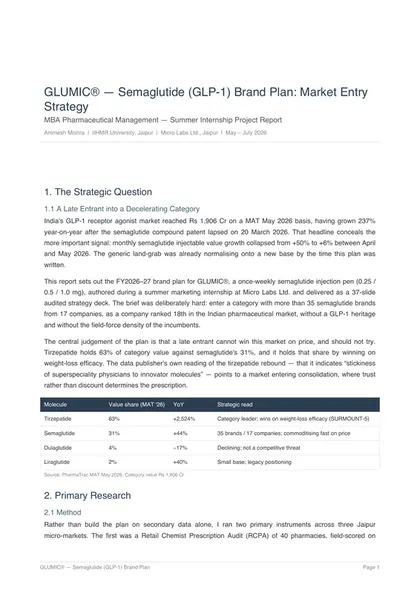

GLUMIC: launching semaglutide as a late entrant
How should a company with no GLP-1 heritage launch semaglutide into a post-patent market of 35+ brands?
- Evidence
- 40-pharmacy RCPA and a signed 10-specialist survey (directional sample); PharmaTrac MAT May 2026; SUSTAIN-6 and SELECT outcomes data
- My role
- Designed and ran the field research; wrote the brand plan and the three-year Excel model
- Decision
- Leave the weight-loss buyer to tirzepatide. Position for cost-burdened T2DM patients with high cardiovascular risk, and lead with adherence support instead of price.
- Output
- 37-slide deck; public 4-page summary